犬种知识库
看分类、找品种、读详情
犬类知识科普站
从犬种起源、性格偏好到饲养与健康，所有内容按「总览 → 分类 → 明细」组织，先看清结构，再深入每一只狗狗的世界。
Breed Encyclopedia
一级：犬种知识库 → 二级：六大分组 → 三级：品种详情卡。点开任意卡片查看完整档案。
Smart Matching
一级：智能匹配 → 二级：五类条件 → 三级：匹配结果与理由。所有条件可叠加。
Care Guide
一级：生活指南 → 二级：四大饲养板块 → 三级：每日操作明细。
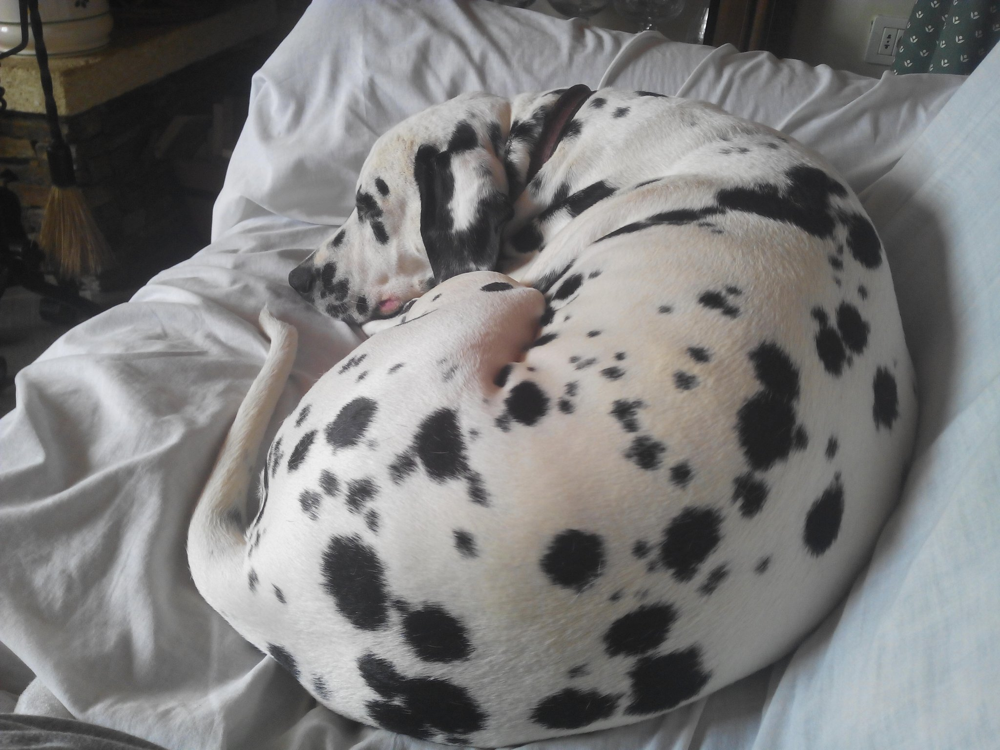
Health Knowledge
一级：生活指南 → 二级：健康三层 → 三级：疾病风险、预防计划与日常观察。
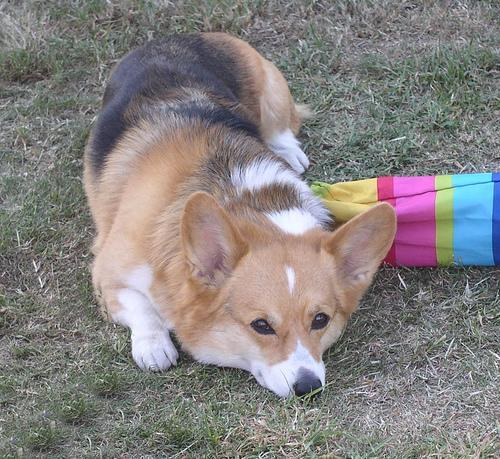
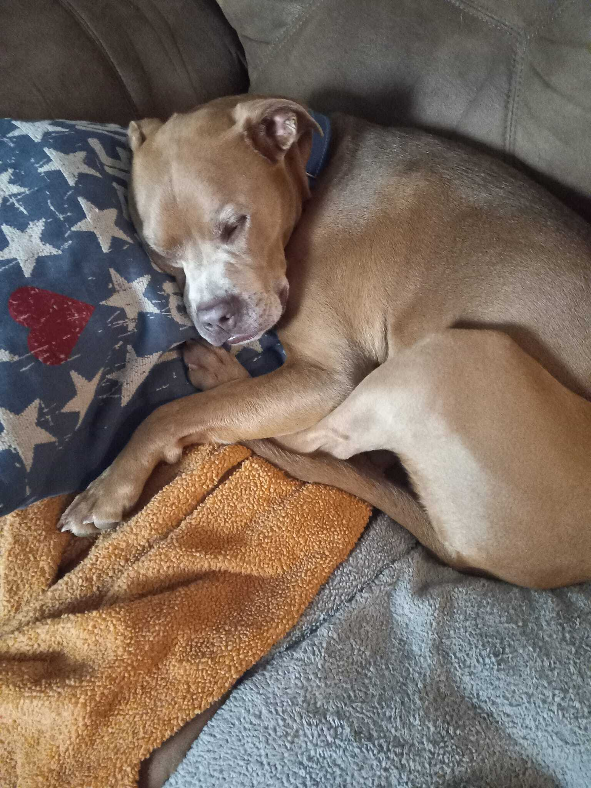
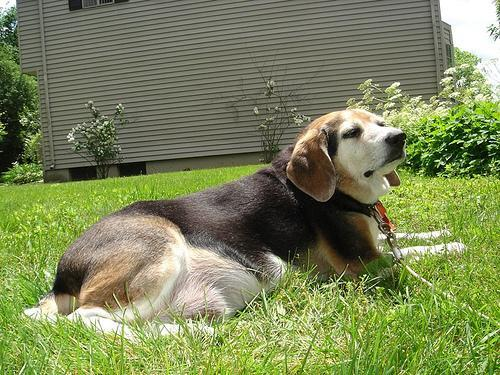
重要提示：本页为一般性科普，不替代兽医诊断。发现异常症状时，请第一时间咨询专业兽医。
Happy Gallery
图鉴之外的 16 位朋友：先看脸，再记住它们的性格冷知识。
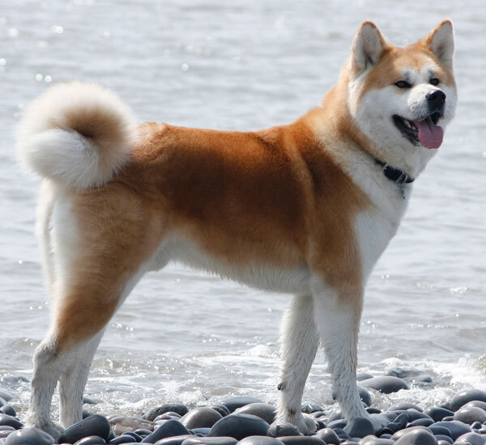
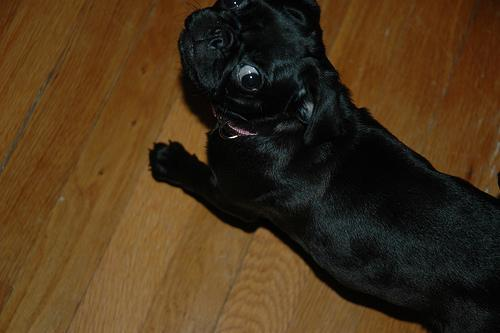
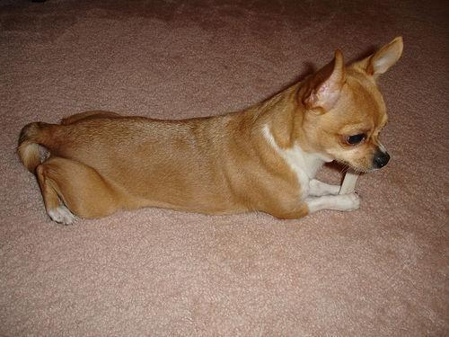
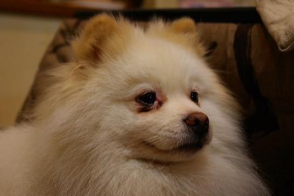
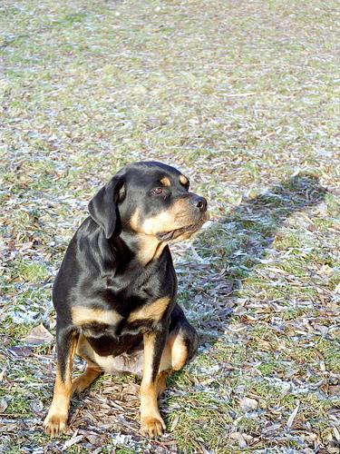
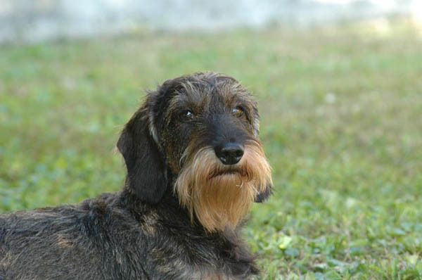
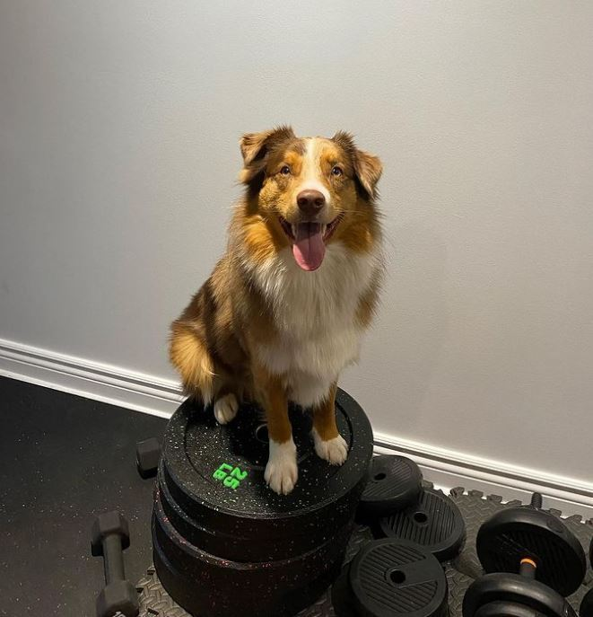
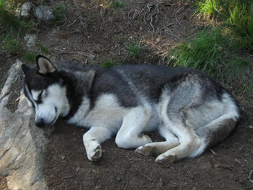
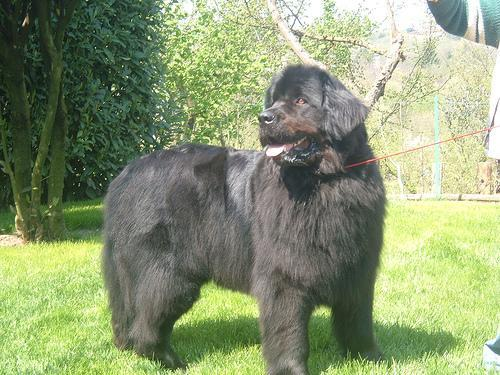
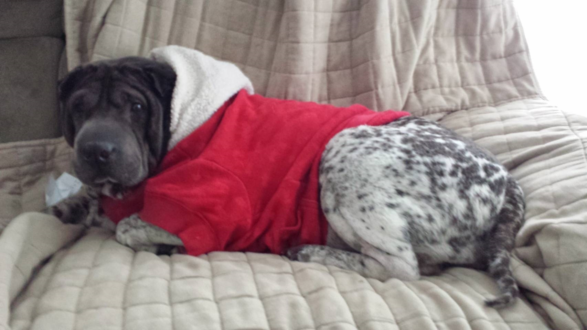
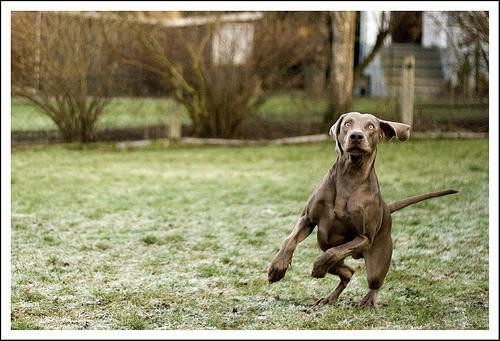
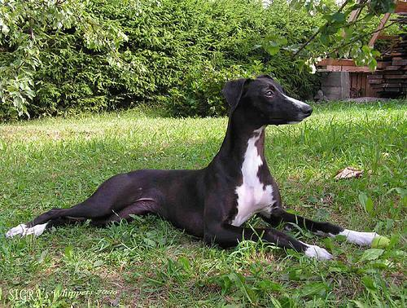
Personality Quiz
5 道题，从活动量、空间、经验、家庭与打理偏好出发，生成推荐名单。
Breed Compare
任选两个犬种，横向比较体型数据、性格维度与健康关注。